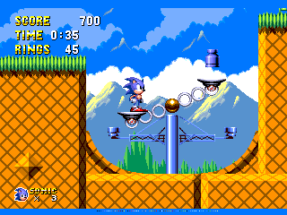

Sonic 1: South Island Definitive (formerly Sonic 1 Definitive) is a ROM hack project by RadiantNexus which seeks to re-imagine Sonic 1 for original hardware.

Made with creativity and passion, our visions and goal for this fan work consists of:
Complete layout overhauls.
Entirely revamped art.
Remixed music, "Act 2" mixes of the aforementioned remixes, and many original tracks.
Revamped zone settings from the original MD Sonic 1, 16-bit visions of zones from the 8-bit MS Sonic 1, and 4 new zones based on concept art.
Re-introduction and re-imaginings of scrapped concept elements.
Quality of Life changes to enhance the player experience.
Minibosses, remixed major bosses.
New in-game cutscenes to convey game's original story, similar to S3's cinematics.
Prerendered models, both modeled and traced for use in the title, menus, and certain sprites.
THE MENU(s).
Many new options.
Cool and Wacky Secrets.
My contributions included creating the majority of the soundtrack, programming numerous objects, and making improvements to the engine. I was brought on to do music in early 2021 and later started making significant programming contributions in 2023.
Downloads:
CGS 2023 Demo
April Fools 2022
SHC 2021 Demo
Credits:
PROGRAMMING: ProjectFM, Rivet, Inferno, Naoto_NTP, Giovanni, RandomName
ENGINE OPTIMIZATIONS: Filter, DeltaWooloo, fuzzybit
PROGRAMMING ASSISTANCE:, MDTravis, MrLordSith, BladeOfChaos, KatKuriN, KGL
GAME DESIGNING: KGL, Inferno, Naoto_NTP, BladeOfChaos, MDTravis
LEVEL DESIGN: KGL, Inferno, Naoto_NTP
ADDITIONAL LAYOUT CONTRIBUTIONS: BladeOfChaos, KatKuriN, Michaelwave
CREATIVE DESIGN: KGL, BladeOfChaos, ManiacShard, Naoto_NTP, Michaelwave
CHARACTER DESIGN: BladeOfChaos, Louplayer
ART: BladeOfChaos, ManiacShard, Louplayer, Michaelwave, joshyflip
ADDITIONAL ART CONTRIBUTIONS: MrLordSith, MDTravis, Naoto_NTP, KatKuriN, KGL, Beta Nexus, DIO-ZX
MODELING: MrLordSith, MDTravis, Naoto_NTP, R0SE, Louplayer
MUSIC: ProjectFM, LunarCryptik
SOUND DESIGN: MDTravis, KGL
SOUND PROGRAMMING: Naoto_NTP, ProjectFM, MDTravis, Filter, DeltaWooloo
MENU PROGRAMMING: Rivet, Inferno, Giovanni
EXTERNAL ART: ManiacShard, MDTravis
EXTERNAL DESIGN: ManiacShard, MDTravis, Somario, KGL, LunarCryptik
CONCEPTS: Inferno, BladeOfChaos, MDTravis, ManiacShard, KatKuriN, Michaelwave, KGL, Naoto_NTP, Somario, Dio-ZX
SPECIAL THANKS AND TESTING:
Ultraring Team, Chopp, Darkn, Saint Nick, ScarlyNight, Emneisium, Tydany, Vincent, MiaCDi, EmmaNerd, AurumMighty
TRANSLATIONS: KrazeeTobi, Beta Nexus
ADDITIONAL CODE TAKEN FROM: Vladikcomper, Devon, MarkeyJester, Vincent
Related Pages
Soundtrack
CGS Release Page
RadientNexus Site